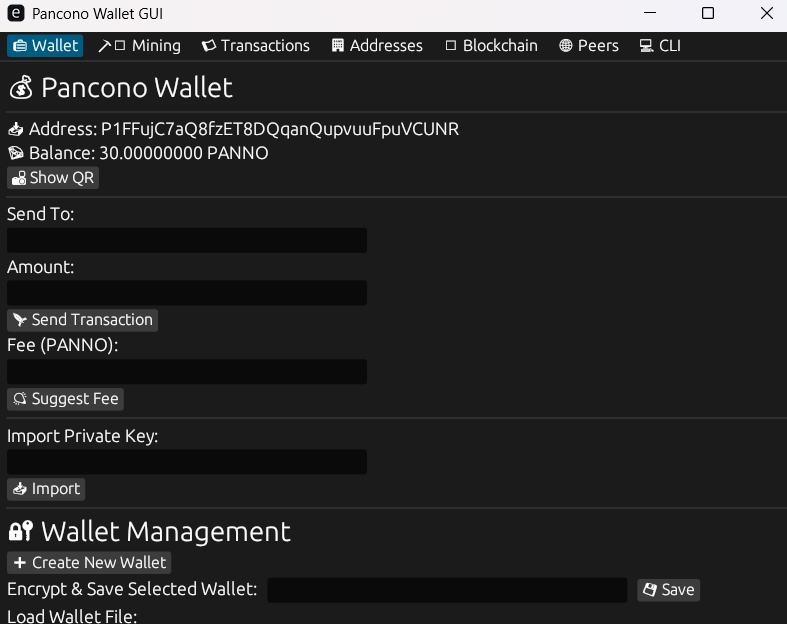
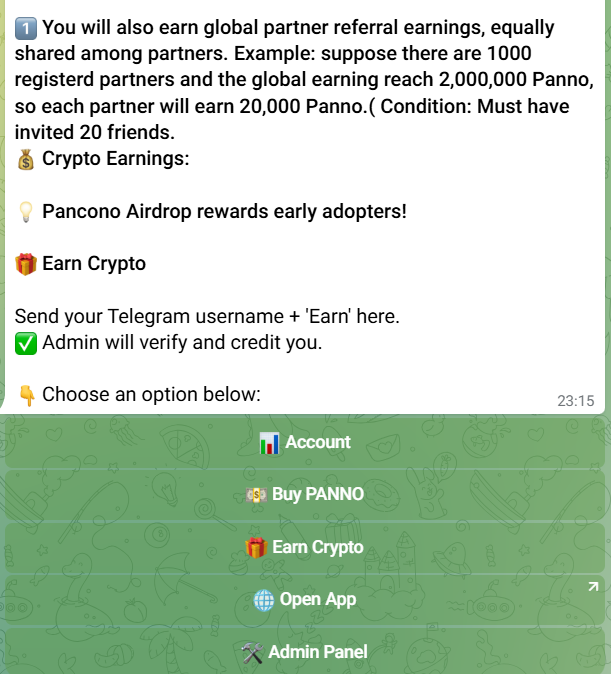

✨ Getting Started:
Download the Mainnet and Testnet apps from below and start mining.

🚀 Inviting friends & Testnet Mining.
“Step 1: Download:"Download the pancono testnet app from below link. “Step 2: Inviting Friends:"Get Invite friends link from below telegram bot and invite one friend. Can check the total invited friends count at telegram bot. “Step 3: Mining:” Once you invited one friend, go to downloaded testnet app and click “Start Mine” tab to begin mining Testnet Panno coins. You will see your mining session active and blocks being hashed as shown at above image of app. For every block you mine, you will receive 30 testnet PANNO coins. Remember that for every 5,000 testnet coins you earn you will earn 1 to 500 Mainnet coins as reward during mainnet launch and airdrop. Therefore Keep mining as many blocks as you can. Once you have mined between 20 to 100 blocks, stop the mining process.Next, go to the Pancono folder somewhere at your desktop and locate the‘wallet_0.dat’ file. This file contains the Testnet coins you mined. Move that file from the Pancono folder to your desktop, then submit it through the 'Google Form to Submit Testnet Files' provided below. At form find 'Add File' and submit it from there. Also tick mark done invited one friend.
Step 4: Repeat the Above Steps: Invite at least one friend before mining, then follow the steps again. Repeat this daily to maximize your earning testnet coins.
✨ Rewards for Mainnet Airdrop
- 1️⃣ Mine 5,000 testnet coins and you earn you will earn 1 to 500 Mainnet coins.
- 2️⃣Mine 100,000 testnet coins and you earn you will earn 5 to 1000 Mainnet coins.
- 2️⃣Mine 1,000,000 testnet coins and you earn you will earn 10 to 10000 Mainnet coins.
- 2️⃣Mine 10,000,000 testnet coins and you earn you will earn 20 to 100,000 Mainnet coins.
The launch of the mainnet, final airdrop, rewards distribution, and tokenomics will be announced on our official Twitter, Telegram, and other social media accounts.
✨Lower Mining Dificulty
Since this is a Testnet version, mining does not require heavy computational power and each block can be mined in approximately 3 to 5 minutes.Watch youtube video availabe at this app on how to mine.
Mining is the process where computers solve mathematical puzzles to verify transactions, mine Panno coins, and add new blocks to the blockchain. The miner who solves the puzzle first receives newly minted PANNO (and transaction fees if applicable), making them the “winner” of that round.
🚀 Mainnet Mining
Mainnet download app at above link will be available during the mainnet launch and final airdrop distribution date. Once available, download the app and start mining on the Mainnet. Mainnet mining is the real mining process where you will earn actual Panno coins.
Just like the Testnet, click the “Start Mine” tab to begin mining. You may stop mining anytime you wish. However, do NOT submit your Mainnet ‘wallet_0.dat’ file through the Google Form because it contains your real mined coins.
Since Mainnet mining is real computational work, it may require significantly more processing power, and mining each block can be medium to hard depending on your system.
The mining process is identical: computers compete to solve mathematical puzzles, verify transactions and mine new PANNO coins. The miner who solves the puzzle first receives the reward.
Note that the mainnet will start very soon after the tesnet is over
🚀 Launch Your Own Coin & Testnet Project
Launch your own cryptocurrency project within the Pancono ecosystem. What you receive: a fully branded Testnet wallet app, just like Pancono wallet app featuring your coin name and identity.
We will provide you our testnet wallet app with you own coin's name. Your task: Promote that Testnet app by sharing it with friends and spreading it across social media. As your user base grows into the thousands or even millions, you become eligible to launch your Mainnet.
Once you reach 1–10+ million users on Testnet, we will provide you with a Mainnet wallet app so your community can download it and begin using your real Mainnet coin. Download the testnet and mainnet app from above and check how the app looks like and its features. Also check the 🤖 Pancono Telegram Bot from below. Check the above and below images of pancono app.
Charges: We chage you one-time fee of $100 payable in any popular cryptocurrency (BTC, ETH, DOGE, TON, etc.). What you get: A fully branded Testnet and Mainnet wallet app—just like Pancono’s own apps—under your coin name, along with millions of pre-mined coins for aidrop distribution, built within the Pancono ecosystem.
Special Offer: If you have a large followers on Twitter, YouTube, or any social platform—and like having 10,000+ followers, subscribers. Do you believe you can promote your newly launched app and Pancono project to build a massive user base—we offer you the opportunity to launch your own coin with our pancono app and ecosystem. for free. Simply fill out the Google Form and submit your details.
🚀 Start Your Own Testnet
Are you a Twitter or Youtube promoter working with meme tokens or airdrops, or someone who has already launched your own token? Do you want to grow your project’s user base? If yes, you can launch your own testnet using our Telegram Wallets or the Pancono App and attract a massive community.
Become a Testnet Partner and receive fully customized Telegram wallets and a branded Pancono App under your own token name—tailored exactly to your requirements. Download the Testnet app from above and check how the App looks like and its features. Also check the 🤖 Pancono Telegram Bot from below.
Your benefits: The Pancono App includes a mining feature where users can mine your testnet tokens using their computers. They can also send and receive transactions within the app’s local blockchain. This allows you to run a complete testnet for your token and build a large user base.
Charges: We chage you one-time fee of $100 payable in any popular cryptocurrency (BTC, ETH, DOGE, TON, etc.).
Simply fill out the above Google Form and submit your details in the Testnet Partner section.
🚀 Own a Pancono Telegram Bot
📢 Become paid or free Telegram Bot Partner of Pancono Airdrop as partners users will earn BTC, ETH, SOL, TON etc Pancono Coins depending on their own referrals & global referral achievements.
✨ Earnings:
💰 How You Earn:
- 👤 Partner Free Plan → Earn 10% of total shared profits.
- 👑👤 Partner Paid Plan → Earn 100% of total profits.
📢 Referral Earnings: All partners will also earn Pancono Coins depending on their own referrals & global referral achievements.
🆓 Free Plan: Bot works occasionally in front end and background → lower earnings in Btc, Eth, Ton etc.
💎 Paid Plan: Bot works 24/7 → you earn 100% of earnings in Btc, Eth, Ton etc.
✨ Fees:
🆓 Free Plan: Free forever.
💵 Paid Plan Fee: $30 every month (payable in BTC, ETH, SOL, TON).
Click and check at below Pancono bot which you will receive. This bot will make you earn Btc, Eth, Ton etc..including Pancono coins.
Note that sometimes the below Pancono bot works some times it doesn't. We intentionally stop and start it to regulate fair distribution of Pancono Coin This ensures thousands of users may not rush at systems to claim their Panno Coins through private keys. But your paid plan bot will work and stay live 24/7 for your benefit.
 10,000 testnet coins you earn you will earn 1 to 500 Mainnet coins✨ How to own Pancono wallet bot?
- 1️⃣ On Telegram search for @BotFather or click below BotFather button.
- 2️⃣ At BotFather type /newbot to create a bot (example name: Pancono1Bot) and follow instruction given by Botfather.
- 3️⃣ Once your new bot is created, copy the bot token 🔑 and send it to Pancono Wallet Bot along with your Telegram username. Or simply file the Goole form and submit the bot token.
- 4️⃣ To send the application via wallet bot, click below wallet bot tab. If the bot is live and working, find the "Earn Crypto" tab and send application details from there.
If we receive your paid plan application 👉 We will set up a new Pancono promotion bot exclusively for you where you can earn BTC, ETH, TON etc and additonally receive Pancono Coins on every referral that joins at bot. If we receive your free plan application we will set up shared wallet bot on your Telegram token you submited.
🚀Pancono Airdrop Allocation
Your participation at every task like joining Testnet and Mainnet and doing task of mining, claiming at 10 minute airdrop session, buying panno from wallet bot, launching your own coins will decide how much will receive pancon coins through aidrop allocation. Below is total 100% set for each task done by users to get qualify for more and more airdrop allocations
- 1️⃣ Join Testnet do mining and get elegible for 20% of airdrop allocation.
- 2️⃣ Invite more and more friends and get eligible for 30% of airdrop allocation.
- 3️⃣ Buy Panno from the above Pancono Bot and get eligible for 30% of airdrop allocation.
- 4️⃣ Become a Pancono paid partner and get eligible for 10% of airdrop allocation.
- 5️⃣ At Pancono app regularly do claim at 10 min airdrop session task, also do import wallet addresses task and get eligible for 10% of airdrop allocation.